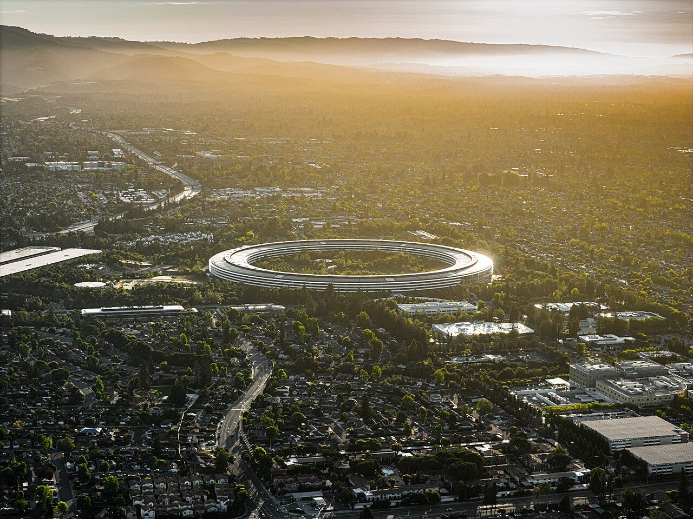
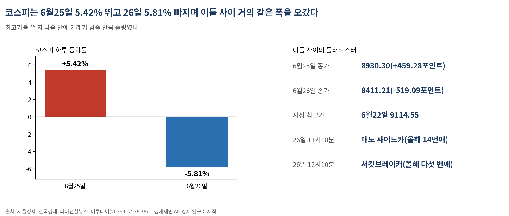
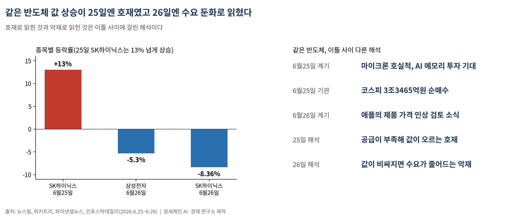
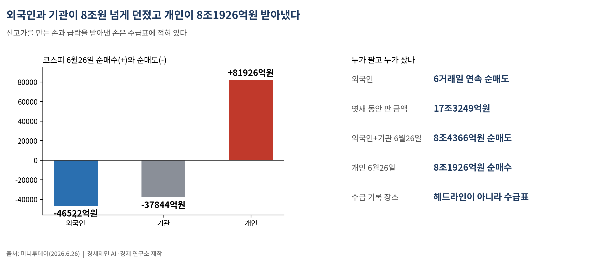
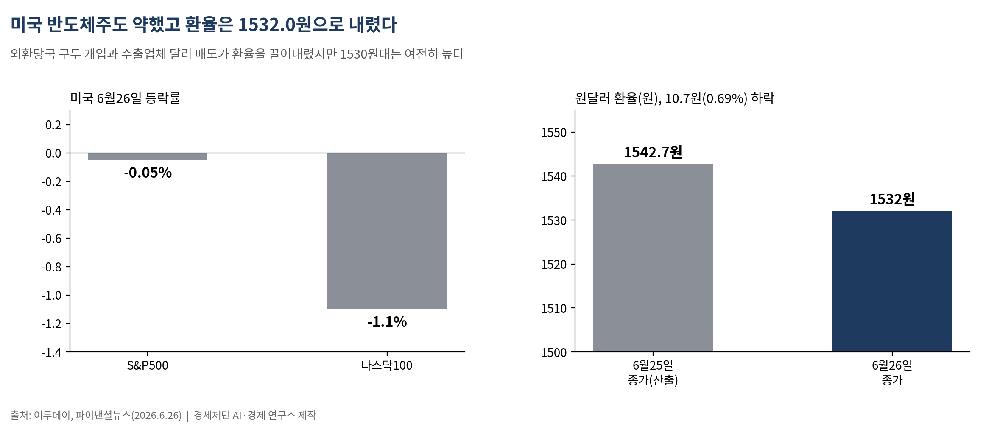
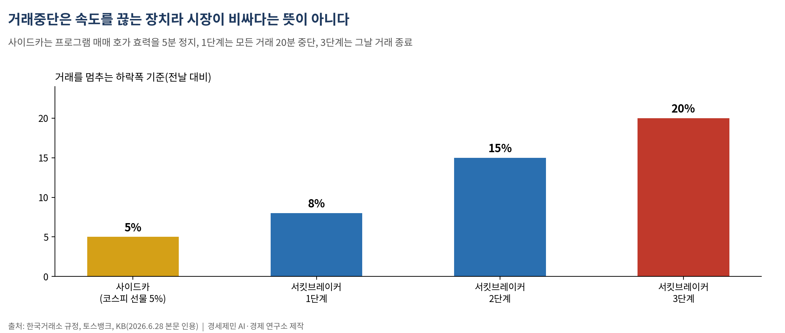
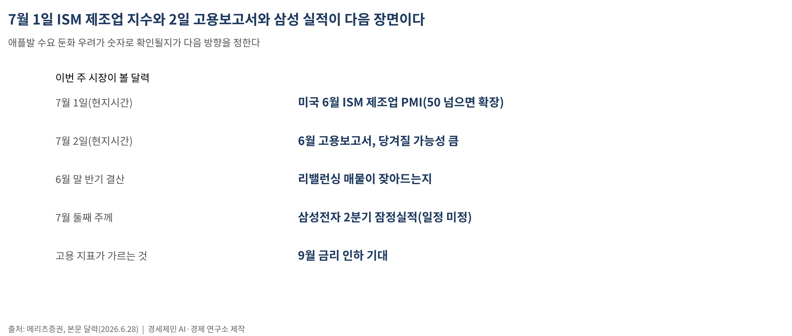

[주식공부] 이틀 만에 천국과 지옥…마이크론에 5.42% 오른 코스피, 애플에 5.81% 빠졌다
6월25일 8930.30으로 솟구치고 26일 8411.21로 주저앉으며 올해 다섯 번째 서킷브레이커 발동…같은 반도체가 호재였다가 악재가 된 이틀

(데이터 기준시점: 2026년 6월26일 종가)
지난주 코스피는 이틀 사이에 천국과 지옥을 오갔다. 6월25일 459.28포인트(5.42%) 뛰어 8930.30에 마감하더니, 바로 다음 날인 26일 519.09포인트(5.81%) 빠진 8411.21에 마감했다(서울경제·한국경제). 하루 올랐다가 하루 빠진 것이 아니라, 거의 같은 폭으로 솟구쳤다가 같은 폭으로 무너졌다.
26일 코스피는 장중 한때 8% 넘게 밀리며 올해 들어 다섯 번째 서킷브레이커(거래 일시중단)가 발동됐다. 오전 11시18분 매도 사이드카(올해 14번째)가 걸린 데 이어, 낮 12시10분 서킷브레이커까지 발동돼 주식과 관련 선물·옵션 거래가 한꺼번에 멈췄다(파이낸셜뉴스·이투데이). 사상 최고가(6월22일 9114.55)를 쓴 지 나흘 만에 시장은 거래가 멈출 만큼 출렁였다.
1. 이틀의 롤러코스터 — 마이크론과 애플

먼저 25일. 전날 밤 미국 메모리 반도체 회사 마이크론이 좋은 실적을 내놓자, 인공지능(AI)용 메모리 투자가 더 늘 것이라는 기대가 번졌다. 삼성전자와 SK하이닉스로 매수세가 몰렸고, SK하이닉스는 하루 13% 넘게 올라 지수를 끌어올렸다. 기관이 코스피에서 3조3465억원을 순매수하며 공격적으로 담았다(뉴스핌·위키트리).
그리고 26일. 분위기를 뒤집은 것은 애플이었다. 애플이 반도체 값 상승을 이유로 주요 제품 가격을 올리는 방안을 검토한다는 소식이 전해지면서, 시장의 시선이 한순간에 바뀌었다. 같은 반도체 값 상승을 25일에는 '공급이 부족해 값이 오르는 호재'로 읽었다면, 26일에는 '값이 비싸지면 사는 쪽이 줄어드는 수요 둔화 우려'로 읽었다(파이낸셜뉴스·인포스탁데일리). 삼성전자는 5.30%, SK하이닉스는 8.36% 빠졌다. 호재로 읽힌 것과 악재로 읽힌 것은, 같은 반도체를 두고 이틀 사이에 갈린 해석이다.
2. 거래를 멈춘 두 장치 — 사이드카와 서킷브레이커

이번 주에 꼭 외울 개념 둘이 26일 하루에 다 등장했다.
하나는 사이드카(sidecar)다. 선물 가격이 전날보다 코스피는 5%(코스닥은 6%) 넘게 오르거나 내린 상태가 1분 이상 이어지면 발동된다. 발동되면 컴퓨터가 자동으로 대량 주문을 내는 프로그램 매매의 호가 효력이 5분간 정지된다. 5분 뒤 자동으로 풀린다. 자동차 옆에 붙은 보조 좌석처럼, 본 거래를 잠깐 옆에 세워 두고 숨을 고르게 하는 장치다(토스뱅크·KB).
다른 하나는 서킷브레이커(circuit breaker)다. 전기 회로에 과부하가 걸리면 자동으로 끊어 주는 안전 차단기에서 따온 말이다. 지수가 전날보다 8% 넘게 내린 상태가 1분 이상 이어지면 1단계가 발동돼 모든 주식 거래가 20분간 멈춘다. 낙폭이 15%로 커지면 2단계, 20%면 3단계가 걸리고 3단계에서는 그날 거래가 아예 끝난다(한국거래소 규정). 26일은 1단계가 걸린 것이다.
둘 다 시장이 공포에 휩쓸려 한 방향으로만 쏠릴 때, 잠깐 멈춰 세워 투자자가 정신을 차리게 하려고 만든 장치다. 거래가 멈췄다는 것은 그만큼 그날 시장이 정상 범위를 벗어나 출렁였다는 뜻이다. 정상적인 하루 등락은 1~2% 안팎이다. 5%대 등락과 8% 거래중단이 한 주에 같이 나왔다는 사실 자체가, 지금 시장이 얼마나 들떠 있는지를 보여준다. 올해 상반기에만 서킷브레이커가 다섯 번 걸린 것은, 신고가 행진과 거래중단이 같은 장(場)에서 벌어지고 있다는 신호다.
3. 누가 팔고 누가 샀나

26일의 진짜 장면은 수급에 있다. 외국인은 코스피에서 4조6522억원을 순매도했다. 6거래일 연속 매도였고, 그 엿새 동안 판 금액만 17조3249억원에 이른다. 기관도 3조7844억원을 팔았다. 반대편에서 개인은 8조1926억원을 순매수하며 떨어지는 값을 받아냈다(머니투데이).
외국인과 기관이 합쳐 8조원 넘게 던진 물량을, 개인이 8조원 넘게 받아낸 하루다. 신고가를 만든 손과 급락을 받아낸 손이 누구였는지는, 헤드라인이 아니라 수급표에 적혀 있다. 떨어질 때 사는 것이 용기인지 무모인지는 다음 장면이 말해 주겠지만, 누가 사고 누가 팔았는지는 이미 같은 날의 숫자로 남았다.
4. 바깥 풍경 — 미국 반도체주와 환율

26일 미국 증시도 반도체주가 약했다. S&P500은 0.05% 내렸고 나스닥100은 1.1% 빠졌다. 마이크론 실적에 올랐던 칩 관련주에서 차익 실현 매물이 나오며 지수를 눌렀다. 한국의 삼성·하이닉스 급락과 미국 반도체주 약세는 같은 결의 흐름이다.
환율은 오히려 내렸다. 26일 원·달러 환율은 전날보다 10.7원(0.69%) 내린 1532.0원에 마감했다. 외환당국의 구두 개입과 수출업체 달러 매도(네고) 물량이 환율을 끌어내렸다(이투데이). 다만 1530원대는 여전히 높은 수준이고, 환율이 높으면 원화로 환산한 외국인 자산 가치가 줄어 매도를 부추기는 배경이 된다. 엿새 연속 외국인 매도의 밑바닥에는 이 고환율이 깔려 있다.
5. 초보가 챙길 잣대 — 거래중단은 '비싸다'는 뜻이 아니다

서킷브레이커가 걸렸다고 해서 한국 증시 전체가 비싸다는 뜻은 아니다. 거래중단은 그날의 '속도'를 끊는 장치이지, 시장의 '가격'을 평가하는 잣대가 아니다.
값이 비싼지 싼지는 따로 본다. 앞으로 1년 예상 이익 대비 주가가 몇 배인지 보는 선행 주가수익비율(forward PER)로 보면, 코스피는 8000대로 내려온 지금 미국 20배 안팎, 일본 16배, 대만·독일 10배 중반에 견줘 여전히 낮은 편이다(삼성증권, 직전 기준). 낮을수록 이익에 견줘 주가가 싸다는 뜻이다. 시장 전체가 싼 것과, 이틀 새 거래가 멈출 만큼 출렁이는 것은 다른 문제다. 하나는 가격의 문제이고, 하나는 속도의 문제다.
6. 다가오는 주 — 고용 지표 한 장과 반기 결산

이번 주 시장이 볼 달력은 셋이다.
먼저 미국 경제지표다. 7월1일(현지시간) 6월 ISM 제조업 구매관리자지수(PMI)가 나온다. 50을 넘으면 제조업 경기가 확장, 밑이면 위축으로 읽는다. 이어 6월 고용보고서가 나오는데, 7월3일이 독립기념일(7월4일 토요일) 대체휴일로 미국 증시가 쉬는 탓에 발표가 7월2일(현지시간)로 당겨질 가능성이 크다. 고용이 식는지 버티는지가 9월 금리 인하 기대를 흔든다.
다음은 반기 결산이다. 증권가는 이번 급락의 한 축으로 6월 말 결제 기준 포트폴리오 리밸런싱(반기 말 비중 조정)을 꼽았다(메리츠증권). 반기 장부를 닫는 매물 압력이 이번 주에 잦아드는지가 변동성의 크기를 가른다.
마지막은 실적 시즌의 문이다. 7월 둘째 주께로 예상되는 삼성전자 2분기 잠정실적(확정 일정 미정)을 시작으로 2분기 성적표가 줄줄이 공개된다. 애플발 '수요 둔화' 우려가 실제 숫자로 확인될지, 아니면 마이크론처럼 기대를 키울지가 다음 방향을 정한다.
이틀 만에 5%를 오르고 5%를 빠진 시장에서, 헤드라인 한 줄을 따라 사고파는 일과 그날 거래가 왜 멈췄는지 그 안을 들여다보는 일은 다른 자리에서 시작한다. 올랐다가 빠진 것과, 왜 올랐고 왜 빠졌는지 아는 것은 다른 문제다.
─────────────────────
활용 AI: Claude Opus 4.8 (Anthropic)
참고문헌
서울경제, "[코스피] 459.28포인트(5.42%) 오른 8930.30 마감", 2026.6.25, https://www.sedaily.com/article/20060141
뉴스핌, "[마감시황] 코스피, 반도체株 질주에 8900선 회복", 2026.6.25, https://www.newspim.com/news/view/20260625001033
위키트리, "코스피 8930.30 마감…하루 거래대금 50조 덮친 반도체 폭등장", 2026.6.25, https://www.wikitree.co.kr/articles/1143246
한국경제, "검은 금요일 코스피, 5.8% 밀려 8400선 후퇴…서킷브레이커 발동", 2026.6.26, https://www.hankyung.com/article/2026062602766
이투데이, "코스피 5%대 폭락해 8400선 마감⋯장중 9% 밀려 '서킷브레이커' 발동", 2026.6.26, https://www.etoday.co.kr/news/view/2597712
파이낸셜뉴스, "애플發 반도체 수요 둔화 우려에 코스피 5.8% 급락 [fn마감시황]", 2026.6.26, https://www.fnnews.com/news/202606261551012588
인포스탁데일리, "[0626마감체크] 메모리 반도체 수요 둔화 우려 속 코스피 5.81% 폭락", 2026.6.26, https://www.infostockdaily.co.kr/news/articleView.html?idxno=216506
머니투데이, "외인·기관 4조 매도 폭탄…삼전닉스 퍼렇게 질렸는데 이 종목 강세, 왜?", 2026.6.26, https://www.mt.co.kr/stock/2026/06/26/2026062611305285855
파이낸셜뉴스, "코스피 8%대 급락에 사이드카·서킷브레이커 잇단 발동(종합)", 2026.6.26, https://www.fnnews.com/news/202606261226254410
서울신문, "[마감시황] 코스닥 4.10% 급락…851.37 마감", 2026.6.26, https://m.seoul.co.kr/news/economy/2026/06/26/20260626500209
이투데이, "[환율마감] 당국개입+네고물량…원·달러 급락 '5거래일만 하락'", 2026.6.26, https://www.etoday.co.kr/news/view/2597716
토스뱅크, "주식 시장이 멈췄다? 서킷브레이커 뜻, 발동 조건, 사이드카 차이", https://www.tossbank.com/articles/circuit-breaker
주식공부 #코스피 #서킷브레이커 #사이드카 #검은금요일 #반도체수요둔화 #애플 #마이크론 #외국인순매도 #변동성
사진 출처
· [대표사진] Nils Huenerfuerst, "Apple Park aerial view, June 2024.jpg", 위키미디어 공용, CC0, https://commons.wikimedia.org/wiki/File:Apple_Park_aerial_view,_June_2024.jpg
※ 이 기사는 인공지능을 활용해 작성했습니다.
관련기사
- 코스피, 사상 최고가 주에 서킷브레이커 급락…다음 주 삼성 실적이 분기점
- [주식공부] 25년 7개월 지킨 왕좌, 하루 만에 주인이 바뀌었다 — 하이닉스가 삼성을 제친 날
- [주식공부] 코스피 9000 첫 돌파한 날, 코스닥은 3% 무너졌다
- [주식공부] 코스피 8000 되찾은 힘, 이번에도 한국 밖에서 왔다
저작권자 © AI경세제민 무단전재 및 재배포, AI학습 및 활용 금지